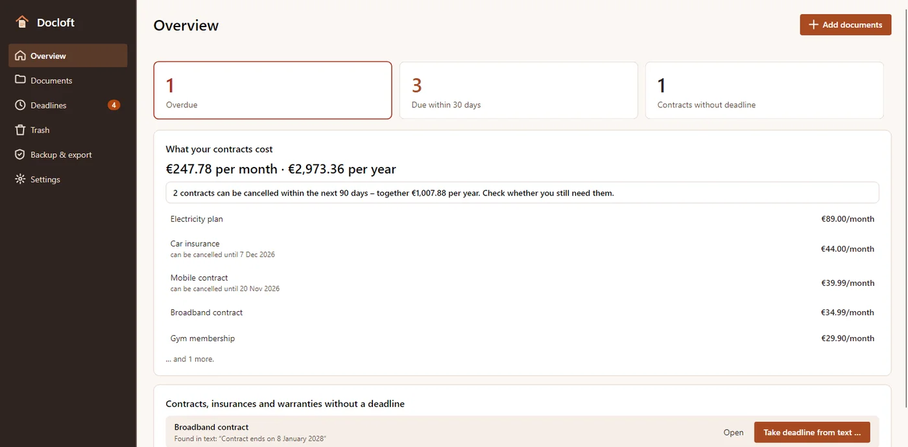
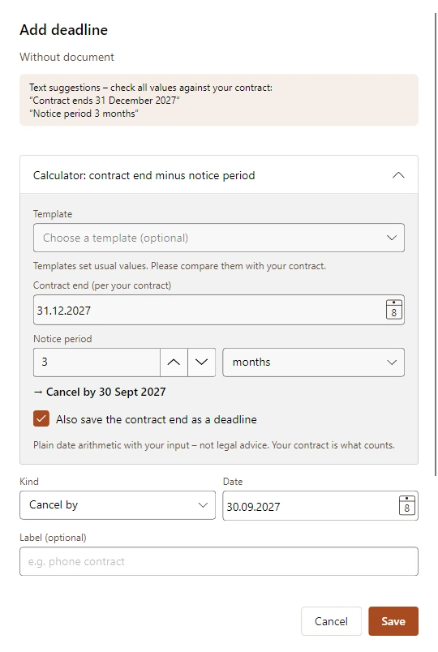
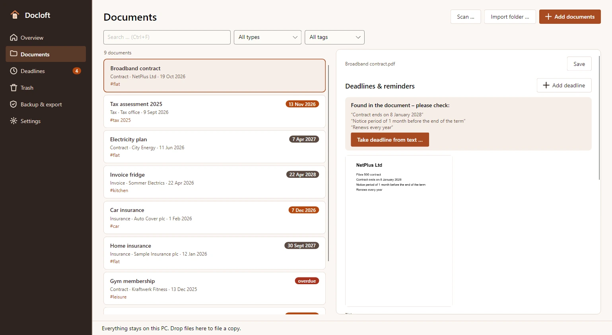
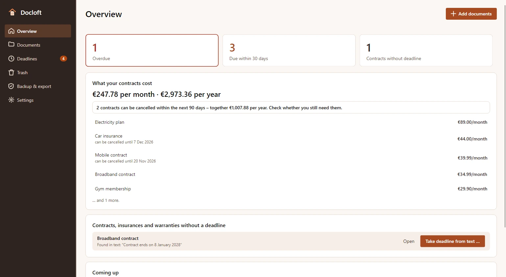
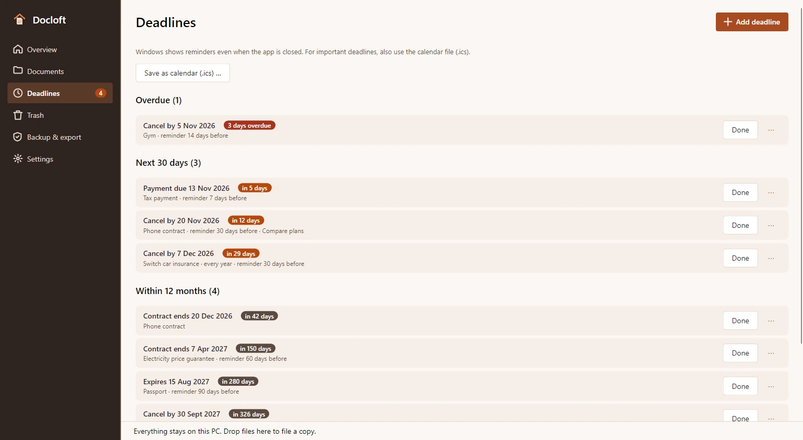
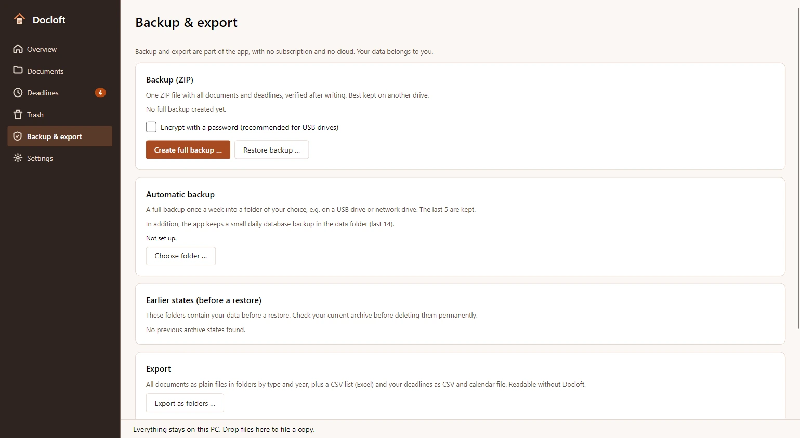
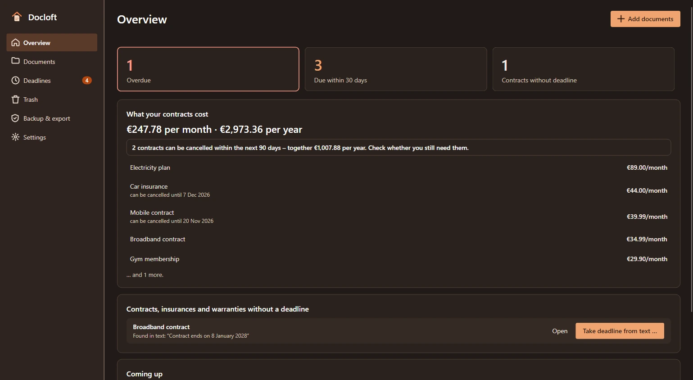

Custos num relance
Quanto custam os teus contratos por mês e por ano – e quais poderias denunciar nos próximos 90 dias.
Pasta de prazos e contratos para Windows
Contratos, faturas e cartas importantes reunidos no teu PC. Arquiva cópias, reconhece texto offline e acompanha os teus prazos. Sem conta, sem nuvem.
Brevemente na Microsoft StoreComo funciona

Adiciona PDFs, digitalizações e fotos do telemóvel arrastando-os ou como pasta inteira. O Docloft verifica a cópia e deteta ficheiros duplicados.
Reconhece texto offline, revê o tipo, a data e o remetente sugeridos e adiciona etiquetas. Tu decides o que guardar.
Pesquisa pelo início das palavras ou sem acentos. Adiciona prazos e escolhe a antecedência das notificações do Windows.
Quanto custam os teus contratos por mês e por ano – e quais poderias denunciar nos próximos 90 dias.
Com número de contrato e data, pronta a verificar, copiar ou enviar por e-mail. Nada é enviado a não ser que tu o envies.
Datas de denúncia, fins de contrato, garantias, pagamentos e validades: vê o que está em atraso e os próximos 30 dias.
Fim do contrato menos prazo de pré-aviso dá a tua data limite de denúncia. Modelos para telemóvel, eletricidade ou seguros preenchem valores habituais – tu comparas com o teu contrato.
Notificações do Windows com a antecedência que escolheres. Um ficheiro de calendário sempre atualizado leva os prazos ao Outlook e ao telemóvel.
O OCR do Windows torna digitalizações e fotos pesquisáveis – pesquisa pelo início das palavras e sem acentos.
Sem nuvem, conta, publicidade ou rastreio. Os teus documentos são ficheiros normais no teu disco.
O Docloft trabalha com cópias verificadas. Os teus ficheiros originais nunca são alterados, movidos ou eliminados.
Durante a utilização, a aplicação cria no máximo uma cópia da base de dados por dia. Não contém os ficheiros dos documentos; cria uma cópia de segurança ZIP completa e guarda uma cópia noutra unidade.
Da importação à cópia de segurança: verifica o texto, calcula a data limite de denúncia e mantém o prazo confirmado à vista.






Pagamento único de 24,99 € na Microsoft Store, sem subscrição.
Atualizações da versão 1 incluídas. A cópia de segurança – encriptada, se quiseres – e a exportação fazem parte da aplicação; os teus dados pertencem-te.
Brevemente na Microsoft Store
Pagamento único de 24,99 € na Microsoft Store, sem subscrição, atualizações da versão 1 incluídas. Os reembolsos seguem as condições da Microsoft Store.
Sim. O Docloft arquiva uma cópia verificada e deixa o ficheiro original inalterado no local onde está.
Localmente no teu PC, em %LOCALAPPDATA%\MinhStudios\Docloft. As cópias dos documentos são ficheiros normais no teu disco; não há sincronização na nuvem.
Funciona localmente com o OCR do Windows e os pacotes de idioma do Windows instalados. Um Tesseract instalado pode ser usado como alternativa.
O Windows pode mostrar lembretes agendados com a aplicação fechada. Ativa as notificações do Windows. São planeados até 200 momentos de lembrete em 400 dias; abre a aplicação regularmente para atualizar o agendamento. As datas vêm dos teus dados; verifica-as.
Não. A aplicação guarda os teus dados e faz cálculos com eles. Não verifica prazos legais, cláusulas contratuais nem obrigações de conservação e não presta aconselhamento jurídico ou fiscal.
Sim, com uma palavra-passe (AES-256), incluindo a cópia automática semanal. Sem a palavra-passe a cópia não pode ser aberta – nem mesmo por nós. Guarda-a num local seguro.